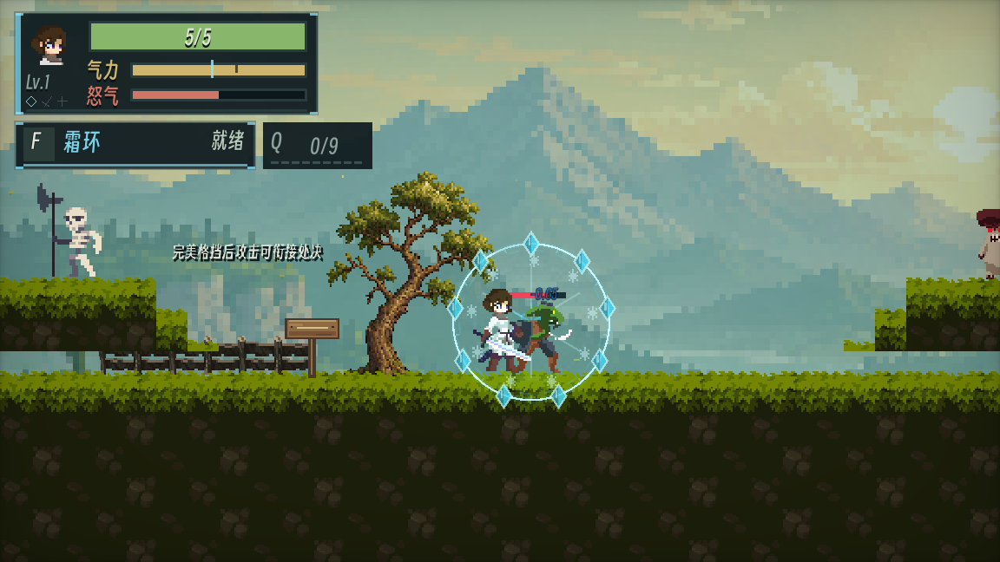
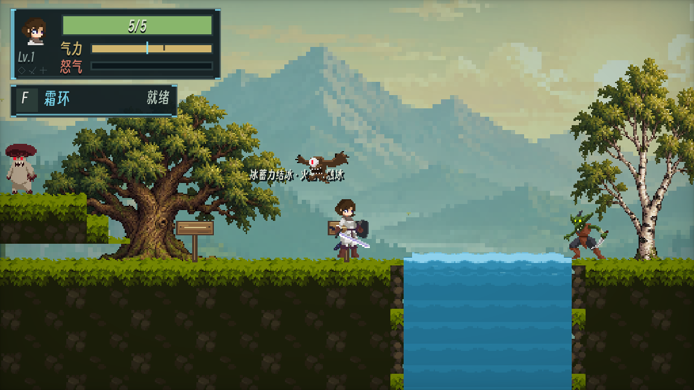
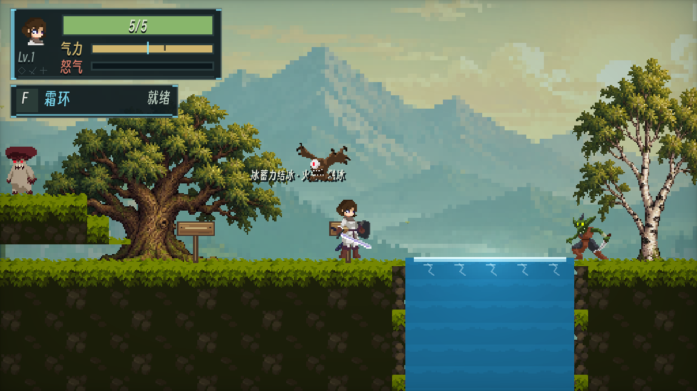
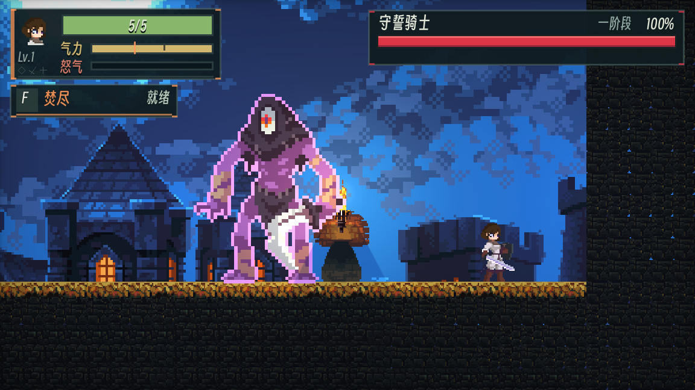

焚尽与剑气划清职责
焚尽按下立即备火，不强插蓄力动作。4 秒内的下一次蓄力刀刃实命中在落点爆燃；剑气、普攻、处决不能触发。近身蓄力承担风险，剑气负责远处输出。
0.80 秒一段蓄力
1.60 秒二段蓄力
1.76 秒长按自动释放
备火消耗 35 气力、冷却 6 秒；空挥、超时、受击、切元素或变身会失去强化，不另加防御收益。
基础动作解决眼前攻击，反应和处决回收收益，水晶与怒气决定下一轮如何进攻。
读取前摇、距离与目标状态。
连段、蓄力、闪避或精准格挡。
元素反应、处决与生命回复。
保存水晶、齐射、开启变身。
本人职责：战斗与玩法方向、三元素定位、反应规则、伤害逻辑和迭代取舍；主导原型实现。
教程框架来自 @timothyqiu《勇者传说》；Cursor / AI 辅助代码实现、修改和调试，美术主要使用购买的可商用素材。原型具备规则与表现，不将其等同于已完成玩家平衡测试。
问题：元素只换颜色时，玩家缺少切换理由；硬控可以一直刷新时，敌人缺少行动窗口。
重复冻结缩短单次时长。
8 秒统计窗口，最多 5 秒实际冻结。
预算用尽，4 秒内不再进入冻结。
免疫期叠冰转为弱化碎裂。
控制总量受限，冰仍保留伤害、减速和冻伤。史莱姆永久免冻，但可以叠冰触发抗性碎裂。
统计窗口在首次冻结开始时开启，持续 8 秒，不是滑动回看窗口。每次成功冻结增加 0.35 抗性，每秒衰减 0.25；抗性时长最低为基础的 35%，最终时长仍受剩余预算限制。剩余预算不足 0.3 秒时直接进入临时免疫，抗性碎裂为正常碎冰的 45%，冷却 1.2 秒。
火爆按已损生命计算，雷爆按当前生命计算；各自有冷却和来源攻击强度上限。收益趋势来自公式，不能据此声称某元素已被实测证明最优。
让成功防御创造进攻机会，并让收益来自一次明确的操作确认。
只免伤的防御会与输出脱节；无条件处决又会抹去风险与主动选择。
精准格挡使本次伤害归零、敌人眩晕并增加怒气；成功反馈之后开放短攻击确认，命中处决再结算元素、吸血和怒气。
读招成功才能获得处决资格，确认超时不保留。窗口外格挡不能保证防住近战。
处决命中基准为 4.0 倍攻击、4 层元素、20% 伤害吸血和 +25 怒气。0.45 秒是成功过渡与确认的总时长，只有后 0.20 秒接受攻击确认。
变身精准格挡接冲刺处决，对路径内每个目标单次结算。处决吸血奖励读招，水晶减伤支付存量，变身近战吸血依赖强化状态；三种容错分别受操作、资源与状态约束。
变身成长改变“如何维持强化”，而不只增加倍率。
满 100 怒气开启，基准 10 秒。玩家需要提前选元素，再把输出集中进这段时间。
取消自然衰减，行动、持续格挡和受伤支付怒气；命中、击杀及 Boss 伤害回收收入，允许切换元素。
投资会降低消耗、提高收入，高投资加高敌人密度可能让维持过于稳定。当前不宣称这条经济已经平衡。
用固定时间组织集中爆发。基准攻击 1.5 倍、减伤 30%，近战命中保留 10% 吸血。
高耗行动付费，举盾持续消耗；支出优先消耗溢出存量，主怒气和溢出都耗尽才退出。
高耗行动按最大怒气的 5.2% 计，格挡每秒 4.8%，受伤 2%；常规事件收入基准乘 80%。击杀基础回复 6%；对 Boss 每累计造成 3% 最大生命伤害，基础回复 3%。这些比率还会受分支投资修正。精通变身中额外累计满一条怒气可触发元素爆发。
让手感、容错与环境交互服务核心行动，不把每个技能都做成输出和防御的叠加包。
焚尽按下立即备火，不强插蓄力动作。4 秒内的下一次蓄力刀刃实命中在落点爆燃；剑气、普攻、处决不能触发。近身蓄力承担风险，剑气负责远处输出。
备火消耗 35 气力、冷却 6 秒；空挥、超时、受击、切元素或变身会失去强化，不另加防御收益。
保存时，实际受伤消耗一个水晶并减伤 20%；提前释放兑现追踪伤害，同时失去防御储备。满 9 个释放增加 3 秒领域。

冰攻击冻出冰桥，火攻击融冰；火烧藤蔓不伤玩家；电击或雷攻击给供能柱充能，矿闸打开后保持开启。固态与液态的通行结果一起改变。


元素分支二级解锁水晶；处决分支解锁终焉斩击、指定终结击杀永久攻击成长与处决刷新；变身分支改写资源预算。每次投资基准加成 6.5%，精通后还可继续投资。
跳跃保留 0.1 秒预输入和土狼时间；空中两段每跳各一次，早期上挑用于对空。奔跑出招继承短暂惯性，蓄力计时加快而姿态动画保持原速度。
不同敌人制造不同压力，危险临近要能被读懂，打中的结果要立即可见。

哥布林头顶感叹号加速闪烁，出手前变红；野猪进入追击立即红色提示，失去视野后减弱。区域攻击由黄到红填充，冰冻免疫区分倒计时与常驻状态。
检验移动、规避与基础攻防循环。
连射、跳砸、地刺与有限子体制造空间压力；在进入战斗区域后开启。
近战、绕后和光柱按距离与冷却选择；重叠区间闪现优先，技能不可用则逼近。
近战不超过 52、冷却 2.2 秒；闪现距离 72–420、冷却 5 秒；光柱距离 300–720、冷却 10 秒，6 根依次落下，每根间隔 0.5 秒。半血以下移速乘 1.25，现版不增加技能频率。
Boss 红条按真实生命比例立即扣除，没有固定粗分格；刚损失部分剥落为细血滴快速坠落，受击端短暂泛光和飞溅。回血清理旧损血反馈，致命一击播放完残留后关闭。
后续的重点是确认这些选择能否被理解、是否值得使用，而非继续堆叠独立技能。
从单次抗性加入累计预算，再为免疫期提供碎裂补偿；下一步验证玩家能否识别规则变化。
从与剑气重叠的输出职责收束到近战备火；下一步记录命中、空挥与受击取消情况。
保留有限减伤并与齐射共享存量；下一步观察何时保存、何时提前兑现。
保留行动预算；下一步关注高投资与不同敌人密度下的净资源变化。
策划案包含上述案例、关键数值附录、优先级和验收条件。验证计划单独记录；本页没有使用率、通关率等玩家测试结论。
打开策划案